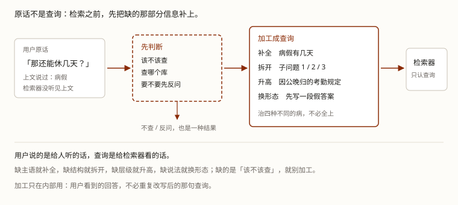

客服窗口里，用户先问："病假怎么算？"回答得挺好。下一句只剩半句："那还能休几天？"
人一听就懂。"那"接的是上一句，问的是病假。检索器拿到的是一串字：那、还、能、休、几、天。它不知道"那"指什么，也不知道该拿"病假"去撞资料库。
资料库里明明写着"员工每年享有 5 天带薪病假"，按字面查，它一段都没捞回来。不是检索器笨，是它拿到的查询本来就不完整。
学完这课，你能：拿到一句问话，判断它缺的是哪一类信息，选对加工方式；知道每种加工的边界和代价；以及什么时候干脆别查。
用户说的是给人听的话，查询是给检索器看的话。两者中间差的那部分信息，就是查询工程要补的。
补法只有四种：补全、拆开、升高、换形态。查之前还要先判断：这句该不该查、查哪个库。
这一课没换检索器，也没换模型，只换了喂给检索器的那句话。
先把"读不懂"拆开。同一个员工手册资料库，同一套检索规则，四种问法会翻在四个不同的地方。
第一种，省略主语。"那还能休几天"只有话题，没有完整的问句。检索器不会自动翻聊天记录，它只看这一句。查询里没有"病假"两个字，它就没法拿这两个字去撞资料库。
第二种，用词对不上。用户说"假期用不掉会作废吗"，文档写的是"当年未休完的年假，可以结转至次年，逾期清零"。"用不掉"对"未休完"，"作废"对"清零"，一个词都没撞上。这不是同义词的问题，是两种人写两种话：一种在提问，一种在写制度。
第三种，一句话里有好几问。"我 2021 年 3 月入职，今年年假能休几天，没休完能留到明年吗？"这一句要三份资料：工龄怎么分档、年中入职怎么折算、没休完怎么结转。整句压成一根向量去比，排序会被其中一段占满，另外两段排到后面。
第四种，问的是个案，资料里只有规则。"昨晚陪客户到半夜，今天早上能晚点去吗？"文档里没有"陪客户"和"半夜"，只有一条"因公出差或加班至晚上十点以后，次日可申请十点前到岗"。按原话查，一个词都撞不上。
四种缺口，对应四种加工。加上查之前的那道判断，就是这一课的全部内容。

改写做的是同一层的事：用户少说了什么，就补什么。最常见的是指代，和多轮对话里的省略。
用户上一句在问病假，下一句只说"那还能休几天"。把上一轮的话题补进去，查询就成了"病假有几天"。这个词一出现，检索器立刻能撞上病假那段。
补的时候要留住锚点。编号、金额、日期、专有名词、用户自己的说法，都是能撞上资料的字。把它们改成更"书面"的词，经常得不偿失。
脚本里有个反例。原话是"年假没休完能留到明年吗"，能查到年假结转那段。把它改写成"公司休假制度有哪些规定"，听起来更正式，结果一段都没命中。"年假""休完""明年"这些能撞上的词全被改没了。
所以改写的边界是：补信息可以，换同义词可以；别把锚点改掉。改完拿原话对一遍，看看哪些字是原来有、改完没了的。
谁来改？一次额外的模型调用。Rewrite-Retrieve-Read 那篇论文把这个动作单独拎出来，叫"先改写、再检索、再读"。它甚至用一个小模型专门做改写器，拿最终回答的效果反过来训它。多数系统不必训，直接让聊天模型按一句提示改就行。
代价是每次查询多一次生成。多轮对话里也不必每轮都改：只有出现"那""这个""它"，或者上一句明显没说完的时候，才值得动。改完的查询只在内部用，不必回给用户看。
改写补的是同一层缺的词。有些句子缺的不是词，是结构：一句话里塞了好几问。
多跳问题（multi-hop）的特点是：后一问要用前一问的答案。问"我 2021 年 3 月入职，今年能休几天"，得先知道工龄怎么分档，再知道年中入职怎么折算，最后还要知道没休完怎么处理。三份资料缺一份，答案就少一块。
IRCoT 是一种把检索和推理步骤交错起来的做法。那篇论文的观察很直接：该检索什么，取决于已经推出了什么。每推进一步，就拿这一步的内容去查下一批资料。论文在四个多跳数据集上，检索最多提升 21 个点，问答最多提升 15 个点。
最朴素的用法是查之前先拆。把原句拆成几个各自能独立检索的子问题，逐个查，最后把几段资料放在一起回答。
脚本里的原句需要三份资料。整句取前两段，只覆盖了天数、折算两段；拆成"怎么折算""每年多少天""没休完能不能结转"三问，3/3 全到齐。
拆开不是越细越好。子问题之间要尽量不重叠；拆得太碎会丢上下文，检索次数和拼答案的成本也跟着涨。拆到每个子问题都能独立检索就够了。像"E-2107 是什么"这种单点查询，拆开只会多花钱。
IRCoT 走得更远：它不是一次拆完，而是边推边查，下一步查什么由上一步的结果决定。顺着这个方向再走，就是让模型自己决定查不查、查几轮；那是第 11 课 agentic RAG 的内容。这一课先把"查之前拆一次"用熟。
有些问题按原话查不到，不是因为词不够，是因为层级不对。用户问的是一个个案，资料库里存的是规则。
Step-Back Prompting 原本是让模型先从具体问题里抽象出上位概念或基本原理，再拿这些概念去推理。搬到 RAG 里，常用它加工查询：拿上位问题去检索背景规则，再回来解原题。
论文在 PaLM-2L 上测到 MMLU 物理 +7%、化学 +11%、TimeQA +27%、MuSiQue +7%。注意这组数字测的是推理题，不是检索命中率。它说明"抽象一层"能帮模型找对推理路径；在 RAG 里，这一步换成了帮查询找对资料层级。
脚本里，原话"昨晚陪客户到半夜，今天早上能晚点去吗"一段都查不到。升成"因公晚归后，次日上班时间怎么规定"，就撞上了弹性工作那段。拿到规则之后，"陪客户算不算因公"留给生成那一步判断；判断不了，就该去问 HR，而不是让检索器猜。
升高的边界和改写正好相反：改写要留住锚点，升高要暂时放下细节。编号、金额、日期这类必须逐字对上的问题不能升高，一升就把要查的东西丢了。资料库里只有案例、没有规则时，升高也查不到东西。
前三种加工改的是查询的内容。还有一种情况：查询本身很短，跟文档的说法差得远。HyDE（假设文档嵌入，Hypothetical Document Embeddings）就是为这个准备的。
用户的问题通常很短，长得像问题；文档通常很长，长得像答案。把一句问题压成向量，去和一堆答案比远近，本来就吃亏。HyDE 的办法是让模型先写一段假答案，再把这段假答案压成向量去查。
论文的原话是：假文档"抓住了相关的模式，但不真实，可能含有错误细节"；真正把它落到语料上的是编码器，编码器的"稠密瓶颈"（把整段压成一根固定长度向量的那一步）会把错误的细节滤掉。假答案不需要对，它只需要把"答案大概长什么样"带到正确的语义区域。
脚本里的原话是"假期用不掉会作废吗"，一段都查不到。假答案写成"未休完的年假可以结转至次年第一季度，逾期未休的部分清零"，立刻撞上年假结转那段。假答案里"也可以申请折现"是编的，但检索器只拿它当一串找路的词；最后回答仍要用捞回来的原文。
适合用 HyDE 的场景：查询很短、用户用词和文档差得远、没有标注数据可训。不适合的场景：编号、金额、日期这类必须逐字对上的查询，假答案会把它们编歪；时效性强的查询，模型不知道最新情况；模型完全不熟的领域，假答案会把它带偏。
温度要低。一篇 12 种 RAG 增强技术的综述给的经验值是 0 到 0.3，让假答案贴着主题走，别放开发挥。代价同样是每次查询多一次生成；它和改写都加一次调用，别不看效果就全叠上。
前面四种加工都默认"要查"。真实系统里，第一道判断比加工更靠前：这句话该不该进检索。
不该查的情况不少。闲聊、创作、翻译、模型自己就会的常识，查资料库不会让答案更好，只会多一次延迟。Adaptive-RAG 把这件事做成一个分类器：按问题复杂度，在"不检索""单步检索""多步检索"之间选。它的出发点很朴素：简单问题不该付多步检索的成本，复杂问题也不该只查一次。
第二个判断是查哪个库，也就是路由：把查询分到对应的库。人事的问题进了财务库，后面的排序再准也没用。路由可以是一条条规则，也可以是一个小分类器，或者让模型看着库的清单选。库少的时候规则就够；库多、边界模糊的时候再上分类器。
第三个判断是"要不要先问清"。用户说"这个政策能报吗"，而上下文里有两个政策，猜错一次比多问一句贵得多。指代补不出来、范围又不明确的时候，反问是正确动作，不是失败。
最后还有一个必须接受的结果：查不到。"公司有班车吗"在员工手册里没有答案，检索返回 0 段（或者分数全低于阈值）。这时候正确的话是"资料里没有"，不是拿一段相似的文字硬凑。生成侧怎么把这句话说好，是第 8 课的事；查询侧的规矩只有一条：别把"查不到"包装成"查到了"。
这一课的分流只做一次，查完就结束。"查完不满意再决定查不查、查几轮"是 agentic RAG，第 11 课再讲。
把四种加工摆在一起，看症状选工具。
| 你看到的症状 | 用哪个 | 一句话做法 | 代价与边界 |
|---|---|---|---|
| "那还能休几天" 指代、省略 |
补全 | 从上一轮补主语，保留锚点 | 多一次生成；别改掉编号、术语、时间 |
| 一句话问三件事 多跳 |
拆开 | 拆成互不重叠的子问题，逐个查 | 检索次数随子问题增加；拆错会把答案带偏 |
| 个案查不到 库里只有规则 |
升高 | 抽象成上位问题，先查规则 | 会丢细节；编号、金额类不能升 |
| 查询太短 用词差得远 |
换形态 | 先写假答案，拿假答案去查 | 多一次生成；精确字面不能编 |
| 不该查、查错库 问不清 |
先分流 | 判断、路由，或反问一句 | 路由错了后面全错；反问多一轮 |
表格不是让你每次全跑一遍。顺序通常是从便宜到贵：先看原话有没有指代和省略，能改写就改写；改写后还是 0 段，再看查询的"形状"，是一句多问、层级不对，还是说法差太远。分流则永远在最前面。
哪种有效，别凭感觉。攒一批真实问题，逐个看它在哪一步掉链子，再决定加哪种加工。这套量法在第 9、10 课。
脚本在工作区：exercises/rag/0007-query-engineering.py。同一个员工手册库，同一套检索规则，只换查询。它不调任何模型。
python exercises/rag/0007-query-engineering.pyWindows 终端若中文乱码，先执行 chcp 65001。检索器是玩具：只数两字组合撞上多少。真的嵌入模型还会做语义匹配，但"查询里根本没说的词，它补不出来"这件事一模一样。下面是改写和拆开那几段的输出摘录。
[1] 改写：原话省略了什么，查询就缺什么
多轮对话里，用户刚问完病假，接着问：
原话：0 段命中（查询里没有一个词撞上资料库）
→ 0 段。检索器不知道「那」指的是病假，也不知道该拿「病假」去撞。
把上文的指代补回查询里：
改写后：段3（病假，1 分）
→ 段 3（病假）。同一句话，补上主语就捞到了。
[2] 改写过头：把关键词改没了
原话：「年假没休完能留到明年吗？」
原话去查：段6（年假结转，2 分） 段1（年假天数，1 分） 段2（年假折算，1 分）
改成更「书面」的说法：「公司休假制度有哪些规定？」
过度改写：0 段命中（查询里没有一个词撞上资料库）
→ 0 段。听起来更正式，可「年假」「休完」「明年」这些能撞上的词全没了。 拆成三个子问题，各查各的：
· 2021 年 3 月入职，当年的年假怎么折算？：段2（年假折算，7 分）
· 年假每年有多少天？：段1（年假天数，4 分）
· 年假没休完能不能结转？：段6（年假结转，3 分）
合起来覆盖：3/3（段1、段2、段6）三处要看懂：
六道题，改写、拆开、升高、换形态、分流各过一遍。
Q1 用户问"那还能休几天？"，检索器一段都没捞到。缺的是什么？
Q2 改写查询时，哪一类词最不能改掉？
Q3 一句话里问了三件事，最直接的修法是什么？
Q4 "E-2107 是什么意思"这类查询，为什么不适合 Step-back？
Q5 HyDE 生成的假答案，正确用法是什么？
Q6 "公司有班车吗"在资料库里没有答案，查询侧应该怎么处理？
回上一课：RAG · 第 6 课 · 多路召回：混合检索与重排（检索器已经尽力了，接下来看问法）
顺着往下：RAG · 第 8 课 · 上下文组装与生成——资料捞回来之后，怎么排、怎么约束、怎么拒答
相关：RAG · 第 9 课 · 两种典型翻车（改完查询还是不对，先分清是哪一类）
术语表：查询工程 / 查询改写 / HyDE / Step-back